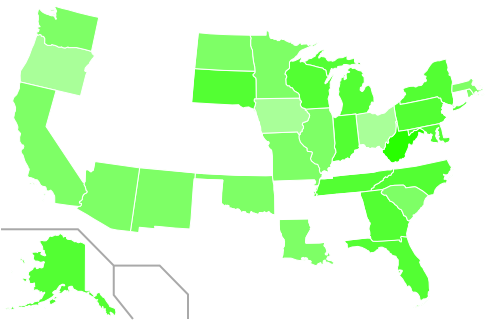
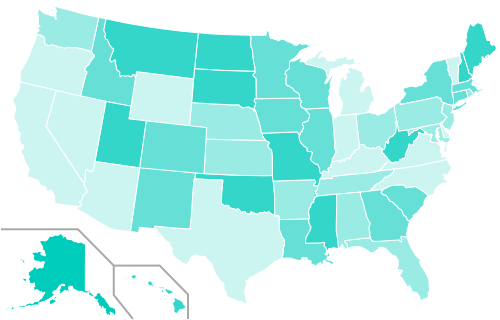
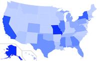
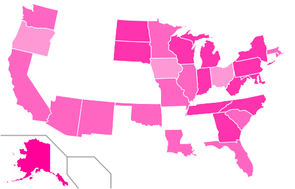
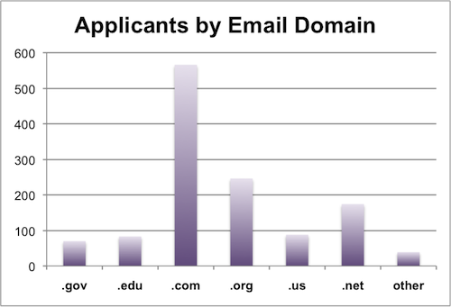
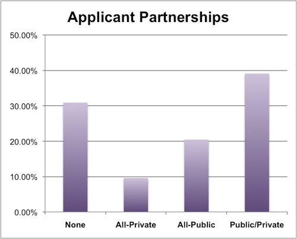

BTOP Applicants, Awards and Poverty Analysis
On Monday we created some graphics illustrating the total grant amounts that were requested for projects by state. New awards have sinced been announced, so I updated that graphic below.

The United States is slowly filling it. We’re using a new algorithm to draw the map, so things should be a little clearer as to where funding is (and isn’t) going.
Grant Requests by Need
I don’t want this data to become a horse-race of trailing zeros, so I thought it would be interesting to weight the dollar somehow. Per-capita is interesting, but because these grants are intended for opportunity I want to throw poverty values into the mix. According to the FCC, affordability is one of the key barriers to broadband adoption. So I calculated the grant amounts by “per-capita living below the poverty level” using the Census Bureau’s 2009 estimated state populations and the 2008 American Community Survey estimates for percent of people below the poverty level.
“Per-capita in poverty” has been calculated by multiplying the state’s total population by the percentage of that population determined to be living beneath the federal poverty level. Dollar amounts are then divided by this population in poverty to give an average dollar-figure for each person living beneath the poverty level in that state. In the maps below, darker colors imply larger dollar amounts and lighter colors imply smaller ones.


This is all grants that have been requested and now things look interesting compared to the unadjusted totals (smaller map at right). All of a sudden the heartland has some color; behemoths California and Texas have paled and New York now has company in the Northeast.
New York state requested the most amount of project funding at just over a $1B. When adjusted per-capita in poverty though, New York is asking for just $398 per person in poverty. By the per-capita in poverty measure, New York only ranks 20th between Georgia (requesting nearly $600M total) and South Carolina (requesting just $275M total).
Alaska, ranking #1 in per-capita in poverty (4th in total grants at $870M), asks for nearly $15,000 per person in poverty—more than the Federal poverty level itself a family of 2. In 2nd is Hawaii at $1,800 per-capita in poverty (but 23rd in total requests).
Ranked last, Virginia trails asking for just $86 per head in poverty, though they rank 42nd in total requests ($69M). On the other hand, the District of Columbia is ranked 43rd in total requests ($63M), but ranked 11th per-capita in poverty at $612 per person in poverty .
One more: Kentucky. Kentucky has the second highest percentage of population living beneath the poverty line at 17.3% (they are tied with Arkansas and Louisiana). They rank 36th in their overall grant requests ($106M) but 46th in grants per-capita in poverty ($143 per person in poverty). On-the-ground issues are complex, but Kentucky is perhaps one example of a state not benefiting according to its need from this process.
Awards adjusted for poverty
Using the per-capita in poverty adjustments, let’s look at awards.

Alaska is still quite the outlier. So far they’ve been awarded $69M total, which is $1,200 per-capita in poverty (granted their population in poverty is less than 6,000 people). Every single state except for Hawaii and Alaska itself, requested less per-capita in poverty (much less).
Following Alaska is West Virginia at $422 per-capita in poverty ($130M in total awards). and South Dakota at $202 per-capita (just $20M in total awards).
Not all Round 1 awards have been announced, only $700M total out of an expected $1.4B (and another $2.6B for Round 2). But so far the average award per-capita in poverty is $79, while the median is just $12. This compares to the total grant awards averaging $24M; the median being less than half-that at $11.5M. Geography aside, there are some clear disparities in awards on a state-by-state level.
I could analyze this all day, but you can download the summary tables (xls) generated from our BTOP/BIP application spreadsheets.
Identifying Applicants by Email Domain

Those last sections involved a lot of dollar-signs, so I want to transition to looking at the applicants themselves. We have two different data sets: the application database and a separate survey the Transmission Project put together with the help of the New America Foundation.
Of 1987 applications total, there were 1265 unique applicants. By analyzing applicants’ email addresses, we can get a general sense of the institutions from which they are applying.
The chart above breaks down how many applicants there were based upon the TLD (top level domain) of their email address. .Gov and .Edu are clearcut and limited expressly to those agencies. Many state agencies use .Us. .Com, .Org and .Net have defined purposes (Commercial, Nonprofit and Network providers), though these definitions are not regulated. So the flaws are that not all agencies use the proper TLD and those using Free Webmail (Gmail, Yahoo, Hotmail) will show up as .com.
This is all applicants, though it could be interesting to break them down by program area (Public Computing, Sustainable Broadband and Networking). That will have to be a project for another day though.
Applicants as Partnerships

From our survey, we asked applicants if their application was a result of partnership with other entities. Interestingly, nearly 70% of applicants surveyed proposed a partnership for their project. Nearly 60% of those partnerships involved a public entity, which contrasts slightly with the email analysis above. This could be a result of a large number of primary applicants being private entities that partnered with public ones, a failure of the email domain analysis, or just a generously worded survey question. Just the predominance of applications involving partnerships is a positive sign for the field and speaks to the gathering power of scaled-up grantmaking.
| Attachment | Size |
|---|---|
| BTOP Application Poverty Data_2-22-10.xls | 32.5 KB |
Comments
Post new comment